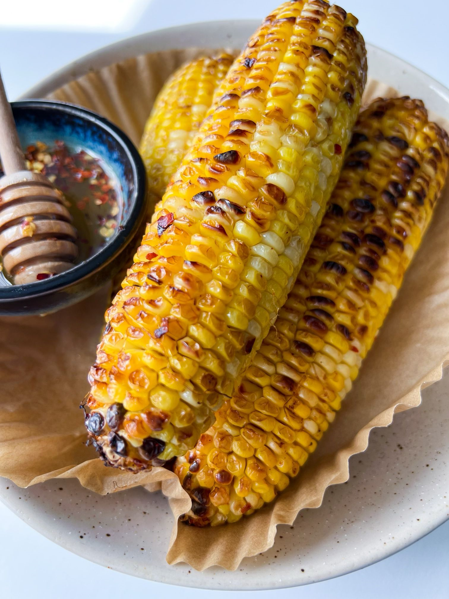

Pizza Bites

Description
Simple and versatile corn made in the Air Fryer. Its the natural sweetness of corn paired with extra sweet honey and a touch of fire.
Ingredients
- 4 ears of Fresh Corn
- Avocado oil
- 1/2 teaspoon salt
- 1/2 teaspoon paprika
- 1/2 teaspoon garlic powder
- 1/4 teaspoon black pepper
- 3 tablespoons honey
- chili flakes, to taste
- hot sauce, to taste, (optional)
- 2 tablespoons butter
Steps
- Brush the corn with oil.
- Mix the salt, paprika, garlic powder, and black pepper together in a bowl. (You can use any seasoning of choice so feel free to experiment.)
- Sprinkle the seasoning onto the corn and distribute it well with a brush or your hands.
-
Place the seasoned corn in the air fryer and air fry at 400F (200C) for 17 to 20 minutes, flipping the corn halfway through.
I like to open the air fryer basket and take the corn out once it's nice and charred.
-
Note: if your air fryer has preheat instructions, please preheat first.
I preheated my air fryer for 5 minutes prior to adding the corn. If you don't want to use an air fryer, you can use the grill instead.
-
In the meantime, add the honey to a bowl and mix in as much chili flakes as you prefer.
If you like it extra spicy you can add some hot sauce as well. Stir the melted butter into the honey.
- When corn is ouf of the air fryer, brush it with hot honey.